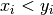

Optimizer — Basic and advanced Pareto functions¶
This module provides basic and advanced Pareto functions.
Module Syntax¶
Empty.
Module Contents¶
- Optimizer.dominates(p, q, optimization_type)¶
Calculate if p dominates q according to optimization_type.
Parameters: - p (list) – ensemble of values taken by p
- q (list) – ensemble of values taken by q (same length as p)
- optimization_type (str) – ‘min’ or ‘max’
Returns: True or False
Return type: bool
Raises ValueError: if optimization_type is not in [‘min’, ‘max’]
- Optimizer._dominates_max(p, q)¶
Calculate if p dominates q. Subroutine of dominates().
Parameters: - p (list) – ensemble of values taken by p
- q (list) – ensemble of values taken by q (same length as p)
Returns: True or False
Return type: bool
Warning
JN: I don’t get the point of this piece of code. The Pareto optimization should take into account all values from the ensembles p and q, not only the last value. The for loop should feature one break statement. Some examples: Optimizer.dominates([9,6], [10,5], ‘min’) returns False and Optimizer.dominates([9,5], [10,5], ‘max’) returns True.
Example:
>>> Optimizer.dominates([1,2,3], [6,7,8], 'max') False >>> Optimizer.dominates([1,2,3], [6,7,8], 'min') True
- Optimizer._dominates_min(p, q)¶
Calculate if p is dominated by q. Subroutine of dominates().
Parameters: - p (list) – ensemble of values taken by p
- q (list) – ensemble of values taken by q (same length as p)
Returns: True or False
Return type: bool
Warning
JN: same remark as before.
- Optimizer.is_absolutely_fitter(p, q, optimization_type)¶
Calculate if p is fitter in ALL score values than q according to optimization_type.
Parameters: - p (list) – ensemble of values taken by p
- q (list) – ensemble of values taken by q (same length as p)
- optimization_type (str) – ‘min’ or ‘max’
Returns: True or False
Return type: bool
Raises ValueError: if optimization_type is not in [‘min’, ‘max’]
- Optimizer._is_bigger(p, q)¶
Calculate if p is fitter in ALL score values than q. Subroutine of is_absolutely_fitter().
Parameters: - p (list) – ensemble of values taken by p
- q (list) – ensemble of values taken by q (same length as p)
Returns: True or False
Return type: bool
Note
JN: the for statement could be rewritten with a return False inside the loop, instead of passing to the variable d.
- Optimizer._is_smaller(p, q)¶
Calculate if q is fitter in ALL score values than p. Subroutine of is_absolutely_fitter().
Parameters: - p (list) – ensemble of values taken by p
- q (list) – ensemble of values taken by q (same length as p)
Returns: True or False
Return type: bool
Note
JN: same remark as before.
- class Optimizer.SMS_EMOA(object)¶
Docstring missing.
Keep in mind, that this algorithm does not guarantee an ever increasing hypervolume, because there is at least one case, where the selection method leads to an decrease in hypervolume:
# + x # + o # + # + # + # # # # # # # # # # # # # #
- +
 pareto front
pareto front - x reference point
- o individual, which is removed because of the
first criterion, which uses pareto dominance
The removal of the ‘o’-individual leads to a decrease of the hypervolume.
WRONG! Hypervolume is defined by the pareto front!
One source of a decrease in the hypervolume is a ‘wrong’ reference
point. This leads to jumps in the hypervolume development.- pop_size¶
size of the population
- eval_steps¶
number of evaluations to perform
- n_processes¶
number of process that should run in parallel
- init_data¶
data for initialisation (list of genes
list
of lists)
- data_dict¶
dictionary that is given to each ‘user-supplied’ function like get_mutant. This allows sharing of special information.
- get_mutant¶
function that selects an individual from a given population and mutates it. Arguments:
population, received_steps, submitted_steps, data_dict.The unique has to be set to: ‘{0}_{0}’.format(received_individuals, submitted_individuals)
otherwise it will lead to problems if one wants to restart
a terminated optimization
- score_indi¶
score a given individual, arguments are the individual and data_dict
- optimization_type¶
“min” or “max”
- run_id¶
use it to add your own flavour to the log dir path
- analyze_pop¶
supply a function, which analyzes a given population from the five given arguments: population, pareto_front, eval_step, optimization_type and data_dict. The result should be a dictionary e.g.:
{'eval_step': eval_step, 'hyper_vol_pop' : x, 'hyper_vol_pareto':y}
- log_data¶
True or False
- print_eval_step¶
True or False
- evolve()¶
Start the optimization.
- select_pop(pop)¶
This selection is based on the standard selection for a sms-emoa and reduces the given population by one individual. The sms-emoa uses two rules to select an individual:
- Calculate number of dominating individuals for each individual, select the one, which is dominated by the most
- If rule 1 is not clear use the hypervolume contribution of the competing individuals and remove the individual, which contributes less to the hypervolume
Notice: There is no guarantee for an ever increasing hypervolume!
Parameters: pop (Population object) – population to study
Returns: dummy_pop or None
Return type: Population object
Raises: - ValueError – if two individuals from pop have the same id
- AttributeError – in case of an unknown error
- _log_individual(indi, eval_step)¶
Append some characteristics of an individual indi to a log file self.log_individual_path: self.pop_size, self.eval_steps, self.optimization_type, time.ctime(), indi.get_r_log_string() and indi.get_log_string(eval_step).
Parameters: indi (Individual object) – individual to log Returns: None
- _log_population(population, pareto_pop, eval_step)¶
Append self.log_pool_path
Parameters: pop (Population object) – population to study
- _write_population(population, eval_step, filename)¶
Docstring missing.
- _write_analysis(eval_step, analysis_dict)¶
This function writes out the supplied dictionary.
- _read_existing_log_files()¶
This method reads the existing log files and sets ‘self.init_pop’ and ‘self.init_pareto_front’.
- +
- class Optimizer.GA_Optimizer(object)¶
This class implements a genetic algorithm optimizer.
- population_size¶
number of individuals
- generations¶
number of generations
- mutate_pop¶
supply a function, which copies the data of each individual, mutates it and creates a new individual with the new data and returns a new population afterwards. If None is given, it will assume that one has a derivative of this class where it is implemented as a class method!
- score_pop¶
supply a function, which scores a given population. If None is given, it will assume that one has a derivative of this class where it is implemented as a class method!
- select_pop¶
supply a function, which selects a new pool from the three given arguments: parents, children, pareto_front a further argument is ‘self.minimization’ because the selection is sensitive to minimization or maximization
- analyze_pop¶
supply a function, which analyzes a given population from the six given arguments: parents, children pareto_front, generation, optimization_type and data_dict. The result should be a dictionary e.g.:
{'eval_step': eval_step, 'hyper_vol_pop' : x, 'hyper_vol_pareto':y}
- optimization_type¶
is this a minimization or a maximization?
- init_data¶
list of data that is used for the initialization
- crossover¶
can be True, False or a function. The function works on the parent population, therefore it is necessary to create new individuals, because the parents should not be modified. After the crossover this population will be mutated. If no function is supplied and crossover is True, the implemented function will be used
- crossover_frac¶
Fraction of the parent population, which will be mutated with the built in crossover
- data_dict¶
additional data, which can be used in any given function, a dictionary seems to be a good idea.
- run_id¶
can be used to create unique directory names for the same generation and population sizes
- log_data¶
log data or not
- print_generation¶
either print the current generation or not
- methods if mutate_pop is not None
Docstring missing.
- methods if score_pop is not None
Docstring missing.
- Optimizer.start_ga()¶
Start the ga.
- Optimizer._ga_crossover(crossover_parents)¶
This method implements a crossover operator. It performs a single crossover and uses a probability of 0.7, that it is 0.3 of the population ‘survive’ the operator without beeing changed.
- Optimizer._log_population(parents, children, pareto_front, current_generation)¶
Log populations.
- Optimizer._write_population(population, filename, current_generation = None)¶
Write one population.
- Optimizer._read_existing_log_files()¶
This method reads the existing log files and sets ‘self.init_pop’ and ‘self.init_pareto_front’.
- Optimizer._revive_individual(line, number_of_genes, number_of_scores)¶
This method takes a line from the log file and returns and individual.
1. unique_id 2. data ... 2. + number_of_genes ... N- number_of_scores = score
- Optimizer._write_analysis(current_generation, analysis_dict)¶
This function writes out the supplied dictionary.
- class Optimizer.Individual(object)¶
This initializes an individual with the given data. The data has to be a list!
- get_dominant_number(population, optimization_type)¶
This method returns the dominant number of this individual for the given population. The dominant number counts the individuals in the given population which dominate this individual (dominates means  for at least one i).
Parameters: - population – population to screen
- optimization_type – either “min” or “max”
- get_log_string(iteration)¶
This method returns a logging string for this individual. Data always has to be a list! Even when it is only a protein sequence.
- get_r_log_string()¶
This method returns an r log string line that can be put at the top of the logging file.
- update_unique_id(iteration, creation_id)¶
Docstring missing.
- score_with_population(population, competitor_id)¶
This method returns a distance score to a given population. It calculates the distance to each individual in the population and returns the mean.
- score_energy_with_population(population, competitor_id, charge = 1)¶
This method returns the potential of the individual.
- Optimizer.revive_population(log_path, iteration = None)¶
This functions reads a log file and returns a Population with the desired population. The ‘log_path’ can be either a ‘log_pool’ file or a ‘log_pareto’ file. If no iteration is given, it returns the last iteration population, if the file is empty it raises an error.
- Optimizer.revive_individual(line, number_of_genes, number_of_scores)¶
This method takes a line from the log file and returns and individual.
1. unique_id 2. data ... 2. + number_of_genes ... N- number_of_scores = score
- class Optimizer.Population(object)¶
Docstring missing.
- remove_individual(unique_id)¶
Removes the first occurance of the individual from the population. In general it should not happen, that there are two individuals with the same unique_id in the population.
Returns: True if the individual could be deleted and False if the individual could not be found.
- is_empty()¶
Check if the population contains individuals.
- add(i)¶
Add an individual to the population (Manuel returned a boolean value from the add call of vector).
- add_population(population)¶
Add another population to this one (that is a copy of the list of individuals, the individuals are not copied!).
- size()¶
Returns the length of the individual list.
- clone()¶
Clone this population. Notice that the individuals will not be cloned!
- get_score_list_2_plot()¶
Returns a list with all scores for plotting.
- get_score_list()¶
This method returns a list with all score items.
- get_data_list_2_plot()¶
Returns a list with the data of each individual.
- get_hypervolume(optimization_type, reference_point = None)¶
Parameters: optimization_type – either “min” or “max”
- get_pareto_frontier(optimization_type)¶
This method returns the pareto front of the population as a new population that consists of all pareto members.
Parameters: optimization_type – either “min” or “max”
- get_pareto_shells(optimization_type)¶
This method returns a list of populations, which make up a pareto shell. First item in the list is the first pareto front and the last is of course the shell with the most dominated individuals.
Parameters: optimization_type – either “min” or “max”
- get_dominant_number_list(optimization_type)¶
This method returns a list, with the dominant number for each individual. The dominant number describes, by how many other individuals a given individual is dominated. For a member of the pareto front this value is 0.
- get_hypervolume_contribution(optimization_type)¶
This method returns the hypervolume contribution of each individual. The method uses the worst fitness score in all dimensions with respect to the type of optimization as the reference point.
Notice that the calculation of the hypervolume contribution only makes sense for a pareto front. Notice further that there are points in a pareto front that have 0.0 contribution to the hypervolume. These elements are the “corners” of the pareto front and should be prefered! If there is just one individual in the population, this method returns [0.0]:browse confirm wa as well!
Parameters: optimization_type – either “min” or “max”
- get_reference_point(optimization_type)¶
Calculate the reference point of the population.
- _get_minimized_pareto_frontier()¶
This method finds the pareto front of the population and returns a new population that consists of all pareto members.
- _get_maximized_pareto_frontier()¶
This method finds the pareto front of the population and returns a new population that consists of all pareto members.
- revive_from_log(log_path, iteration = None)¶
This method revives a population from a given log file path. If this population is not empty, it will raise an error, so that it will not override any data.